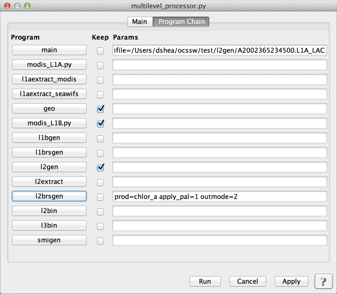

Multi-level Processor
Processes a file or list of files through multiple levels.
Location
Details
Sub-Programs
Command Line Usage
Location
Tools -> SeaDAS Processing -> Multi-level Processor
Details
multilevel_processor.py - Main Tab
 |
Arguments/Keywords
| UI Element Name |
Type |
Description |
Required/Optional |
Default Value |
| ifile |
file name |
Input file or list of files |
Required |
none |
| odir |
output directory name |
output directory name |
Optional |
none |
| Parfile |
text |
all parameters for each section |
Required |
none |
Actions/Buttons
| UI Element Name |
Type |
Description |
| Browser Button |
Button |
Selects the input file |
| Load Parameters |
Button |
Selects a parfile to load |
| Retain Selected IFILE |
Check Box |
When loading a parfile, use the ifile above instead of the ifile in the parfile |
| Save Parameters |
Button |
Write the current parfile to a file |
| Run |
Button |
Executes multilevel_processor.py with arguments provided in the UI |
| Cancel |
Button |
Closes current processor GUI |
| Apply |
Button |
Makes current arguments effective |
| ? |
Button |
Displays the help content of the current command |
multilevel_processor.py - Chain Tab
|  |
Actions/Buttons
| UI Element Name |
Type |
Description |
| Program Buttons |
Button |
Opens a GUI window to configure the individual step/program |
| Keep |
Check Box |
When selected the output files produced by this step/program will be kept on disk and not deleted |
| Params |
Text |
Parameters passed to this step/program |
| Run |
Button |
Executes multilevel_processor.py with arguments provided in the UI |
| Cancel |
Button |
Closes current processor GUI |
| Apply |
Button |
Makes current arguments effective |
| ? |
Button |
Displays the help content of the current command |
Sub-Programs
Command Line Usage
Usage:
multilevel_processor.py [options] parameter_file
The parameter_file is similar to, but not exactly like, parameter
files for OCSSW processing programs:
- It has sections separated by headers which are denoted by "["
and "]".
The section named "main" is required. Its allowed options are:
ifile - Required entry naming the input file(s) to be processed.
use_nrt_anc - use near real time ancillary data
keepfiles - keep all the data files generated
overwrite - overwrite any data files which already exist
use_existing - use any data files which already exist
Simultaneous use of both the overwrite and use_existing options
is not permitted.
The names for other sections are the programs for which that section's
entries are to be applied. Intermediate sections which are required for the
final level of processing do not need to be defined if their default options
are acceptable. A section can be empty. The final level of processing
must have a section header, even if no entries appear within that section.
- Entries within a section appear as key=value. Comma separated lists of
values can be used when appropriate.
- Comments are marked by "#"; anything appearing on a line after that
character is ignored. A line beginning with a "#" is completely ignored.
In addition to the main section, the following sections are allowed:
Section name: Applicable Instrument(s):
------------- -------------------------
level 1a: modis
l1aextract_seawifs: seawifs
l1brsgen: modis, seawifs, general
l1mapgen: modis, seawifs, general
geo: modis
l1aextract_modis: modis
level 1b: modis, seawifs, general
l2gen: modis, seawifs, general
l2extract: modis, seawifs, general
l2bin: modis, seawifs, general
l2brsgen: modis, seawifs, general
l2mapgen: modis, seawifs, general
l3bin: modis, seawifs, general
smigen: modis, seawifs, general
Example:
# Sample par file for multilevel_processor.py.
[main]
ifile=2010345034027.L1A_LAC
[l2gen]
l2prod=chlor_a
# final processing level
Options:
--version show program's version number and exit
-h, --help show this help message and exit
-k, --keepfiles keep files created during processing
--output_dir=ODIR, --odir=ODIR
user specified directory for output
--overwrite overwrite files which already exist (default = stop
processing if file already exists)
--timing report time required to run each program and total
--use_existing use files which already exist (default = stop
processing if file already exists)
-v, --verbose print status messages to stdout